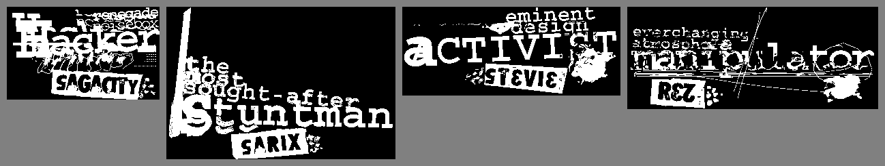
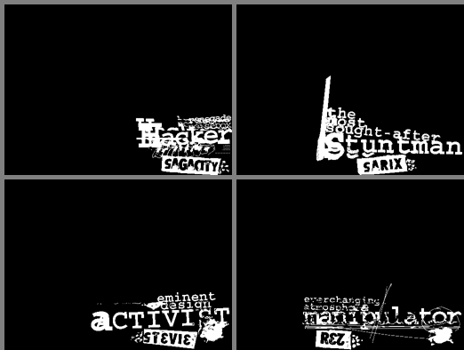
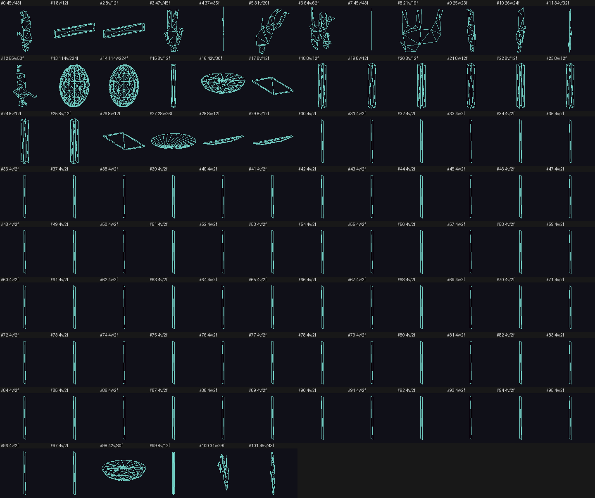
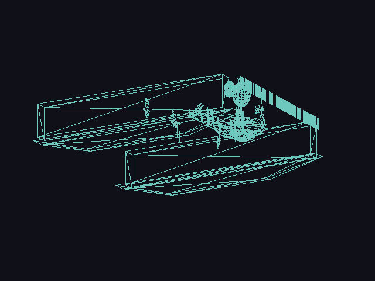

Status: partial. Ported: slot 3 (star/kaleidoscope), slot 13
(images), grain. Everything else is documented below but not ported. See
README.md for the honest table.
v are white, the rest
black (0x40c691). All "brightness" in the demo is therefore a threshold
on an additive 8-bit accumulator: effects add into the screen buffer
with saturating or wrapping byte adds and the level decides what is
white. Level changes (fades, pulses) are the main visual dynamic.A 256x256 byte texture is cleared each frame and 120 iterations add
(+0x3f saturating) horizontal and vertical lines whose lengths follow
100 - trunc(sin(k*0.01 + a) * -128) and whose positions
follow log10 spacing (LG[119]-LG[120-k]), with
amplitudes sin(a)*40+50, cos(a)*40+50, a =
t*0.005 (t = timeGetTime()/10). The screen is that texture read through
a 512x384 table of words (radius -> column, angle -> row), which
turns the grid of lines into the dotted star / rings. Command 6 fixes
the vertical line length (0x42725c), command 7 switches off the
horizontal lines and enables a scrolling text overlay (text itself is
GDI and blank in our emulation), command 8 renders the overlay text.
Check: texture bit-exact vs the original routine under Unicorn (grain
off); golden frames agree outside the grain range on every pixel (orders
0-2 and 14-16). Note the loop runs 119 times (the log table pointer
stops at index 118), not 120.
Four 512x384 pictures built at init from embedded bitmaps
(v = (255-v) & 0x7f), added with paddusb
to the screen; command 6 selects the image (0..3 at orders 12-14). We
ship the four images dumped from the emulator
(web/assets/fx13.bin).
768x512 buffer of rand() & 31, added (wrapping
paddb) at a random offset rand() % 0x30000
every frame. Not reproducible without the MSVCRT LCG state, approximated
with Math.random.
After the other effects, the screen is halved and four mirrored
quadrants (256x192, sampling walks outwards from the centre at a
fixed-point step of 0xfe/256 per pixel) add
LUT[0x80 + bilinear] to each pixel in place, so every pixel
is blended with an already-zoomed neighbour: a recursive blur/zoom that
turns hard lines into the soft noise floor seen in orders 18-20. Then
x2. MMX details: the 16-bit lane low bytes are junk from earlier
registers (see NOTES). Port is within +-1..3 LSB of the original.
The demo is a single UPX-packed PE with no other data files (the
folder holds only the exe and text files), so all art lives in the
unpacked image (re/unpack_upx_pe.py runs the UPX stub under
Unicorn and dumps 0x400000..0x4c9000 to re/image.bin,
823,296 bytes; offsets below are virtual addresses, file offset =
address - 0x400000). Facts were re-derived from the disassembly
(re/img_all.dis) and by decoding the bytes; previews are in
figures/.
u16 width, u16 height then (width/8) * height
bytes of 1 bit per pixel, row by row, bit 0 of a byte =
the rightmost pixel of its group of 8. No palette, no colour:
the demo's palette is always two-valued (section "Structure"). Sizes:
224x137 (3836 bytes), 336x225 (9450), 320x131 (5240), 368x151
(6946).(255 - v) & 0x7f, i.e. picture pixels (bit 0) =
0x7f, everything else 0. At run time the buffer is added with
paddusb to the screen, so they show as white shapes on
black after the palette threshold.re/fx13.raw
(web/assets/fx13.bin) with 0 differing bytes in all
four buffers; the pixels outside the bitmap rectangles are
0.

CHK_HELPER/CAMERA/MESH/SCENE at 0x415208 show it is
modelled on a 3DS-style chunk loader). It is the only caller of that
loader.u8 id, u16 length (length
includes the 3-byte header). The block is one chunk 0x10
(length 13849; its handler reads two u16), followed by
102 chunks of id 0x20 (mesh) that tile the block
exactly. Mesh chunk: u8 nverts, u16 nfaces,
nverts * 3 * s16 coordinates (the loader divides each by
255 to get a float), nfaces * 3 * u8 triangle indices, then
14 bytes the mesh handler does not read (their meaning was not
determined). The loader also draws six rand()
values per face, scaled by 1/256, into the face record (use not
determined, so face attributes that depend on rand() are
not stored in the file).

No glyph data is in the exe: text is drawn by the OS through
CreateFontA (helper 0x40bd64: face, height, bold flag) and
TextOutA into a DIB (helper 0x40bd9a), which is why it is
blank in the emulator. Faces and heights seen at the call sites:
Impact (0x411034) at heights 200, 150, 100, 50 and a
variable one, Arial (0x411094) at 31 and a variable
one, Courier (0x414a90) at 10 and 16. Strings (in the
image): i am not feeling so coca cola today (0x411010),
work consume sleep ... (0x41103c), antimoney
(0x4110a0), five Courier paragraphs from 0x414ab0 (e.g. "Less than an
hour after I step off the plane, ..."), 3state /
sleep / consume (0x414a88..),
reported TRAFFIC heavy (0x4151a4), and
antimoney - www.threestate.com - work - consume - sleep
(0x41b7cc). Slot 3's init (0x401220) allocates a
3584x200 byte texture (0xaf000 bytes) and renders the
Impact-200 sentence into it.
rand() & 31.LUT[i] = clamp(i*f)).web/fx/slot12.js; README, "Slot 12").web/fx/slot5.js, re/NOTES.md
Update 5).web/assets/fx13.bin, 4 x 196,608 bytes.3D engine scenes (slot 14 only now; 10, 11, 17, 18 are done: shared
software engine at 0x407000-0x40bd00, mesh loader 0x407d80, polygon
0x407370, camera 0x409a71), the slot 3 GDI text overlay, rand-driven
slot 4. Slots 4, 5, 12, 15 and 18 are ported bit-exact against the
original under Unicorn (grain off; slot 15 is a 256x256 voxel terrain
marched per column with a sin-driven palette level, slot 18 three
Hermite-spline wire curves drawn with a 13-pixel brush, palette ramp
(pos-0x1a00)*2.5+100; see re/NOTES.md Update
6). The text of slots 4 and 18 is approximated with canvas text. The
palette level of the 11/13 era is still fitted to the golden run in
web/fx/compose.js.
Slot 22 / 11 / 17: slot 22's glow LUT is exact once every product is rounded to f32. Slot 11 is a 102-mesh scene drawn with a custom flat triangle (type 199) and a Hermite keyframe camera; slot 17 is a seeded-random particle effect. All three match Unicorn byte for byte. Slots 10, 16 and 23 are now ported too (see below); only slot 14 and the slot 3 text overlay remain.
Slot 10, sprite ribbon: init builds 64 16x16
sprites (sprite k has radius k/8, byte
0x40 - ftol(min(1, dist/r)*64)). Each frame walks t from 0
to 1.371 in steps of 1.5e-4 (about 9140 points), builds a direction from
three sines (vx = sin(u*...)..., u = 50t), rotates it by an
X/Y matrix (angles from the clock and from sin(clock)*80),
scales it into a view and picks a sprite size from depth, then
paddusb-blits 16x16 bytes (MMX). Bit-exact vs Unicorn with
every x87 op rounded to f32 (web/fx/slot10.js). One trap:
the angle is (clock & 0xffff) / 20, the magic multiply
0x66666667 followed by sar 3 divides by 20, not
10.
Slot 16 and 23, GDI text: both rasterise text
into byte masks at init (slot 16: "anti", Arial bold 31 px, 128x32; slot
23: five 1536x16 Courier lines) and then only do integer work per frame.
Slot 16 re-seeds rand per frame, jitters each lit cell by
rand() % m - m/2 with m = ftol(sin(t)*4.4+6)
and adds a 12x12 block with dword adds (byte carries leak between
neighbours, modelled). Slot 23 adds 512-wide windows of the lines (value
0x65, mod 256) scrolling 0.2 px/ms, 16 rows each, starting at row Y.
Since the emulator's GDI draws nothing, the oracles feed synthetic masks
(0 differing bytes) and the player uses canvas text.